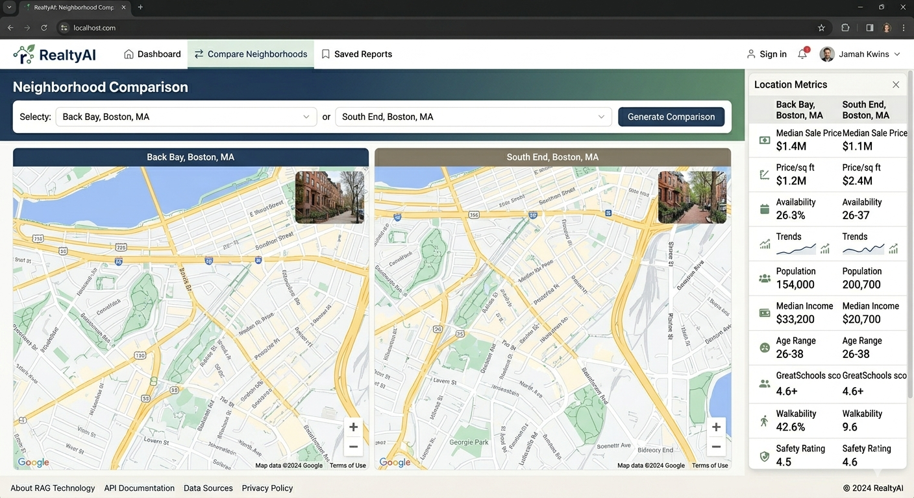

NexoraAI - Multi-agent ed-tech platform
I architected a multi-tenant platform for over 1,000 concurrent users, specifically focusing on solving the reliability gaps in Generative AI. I utilize LangGraph to build stateful agentic workflows that leverage checkpoints for crash recovery and human-in-the-loop async processing to ensure output quality. To solve for precision and speed, I engineered RAG pipelines that use semantic chunking and embeddings stored in Pinecone. I’ve optimized our retrieval by implementing inverted file indexing (IVF) and metadata filtering to keep latency under 500ms even as we scale property and curriculum records. My evaluation strategy has moved beyond simple zero-shot prompting; I now use LLM-as-a-judge to automate rubric scoring, backed by robust prompt injection defenses to protect our student data.
conflux systems - MLOps for fraud detection

I focused on the 'MLOps' side of the house—building end-to-end supervised learning pipelines and ELT processes using Airflow. I specialized in scaling inference services with Docker and Kubernetes, ensuring that the models I optimized—like XGBoost and LightGBM—were production-ready and monitored for model drift.
skygaurdAI - AI-Integrated ATC Tracker
Real-time deep learning system processing more than 100K telemetry events per second across more than 10K flights, enabling sub-500ms conflict prediction with 94% precision. LSTM and Transformer-based sequence models predict safety-critical conflicts using CBF for more than 2 hours in advance. Event driven multi-agent reinforcement learning optimization system, improving airspace throughput by 25% and reducing landing delays by 30% while maintaining more than 99% safety compliance.
realtyAI- Neighborhood Comparison Assistant with RAG

End-to-end RAG system integrating LLMs, vector databases, and external APIs, improving user decision efficiency by 50% through structured neighborhood comparisons. Semantic retrieval pipeline using embeddings, metadata filtering, and optimized indexing, achieving sub-500ms query latency across more than 10K property records.Real-time data pipelines for ingestion, embedding generation, and vector indexing, maintaining 95% retrieval accuracy and high data freshness SLAs.
CleanTweets - NLP-Based Offensive Tweet Blocker
Real-time NLP classification pipeline using Transformers and scikit-learn, achieving 90% accuracy in offensive content detection. Streaming data ingestion using Twitter API with sub-1s inference latency, enabling real-time moderation and automated content filtering. Rule-based and model-driven blocking mechanisms, improving platform safety and reducing exposure to harmful content.